Grafica con Matplotlib#
In Python è possibile creare grafici utilizzando la libreria matplotlib e, in particolare, il suo modulo matplotlib.pyplot. La documentazione ufficiale è disponibile sul sito matplotlib.org.
Per importare il modulo si utilizza comunemente la seguente istruzione:
import matplotlib.pyplot as plt
Creare un grafico con Matplotlib è molto semplice. Consideriamo due vettori \(N\)-dimensionali \( x=(x_1,\ldots,x_N), \qquad y=(y_1,\ldots,y_N), \) contenenti le coordinate degli \(N\) punti che vogliamo rappresentare.
La funzione plt.plot(x, y) rappresenta nel piano le coppie di coordinate
\(
(x_i,y_i), \qquad i=1,\ldots,N.
\)
Il grafico deve essere poi visualizzato mediante plt.show()
import numpy as np
import matplotlib.pyplot as plt
# Creo i vettori
a = 0
b = 2*np.pi
N = 15
x = np.linspace(a, b, N)
y = np.sin(x)
# Visualizzo
plt.plot(x, y)
plt.show()
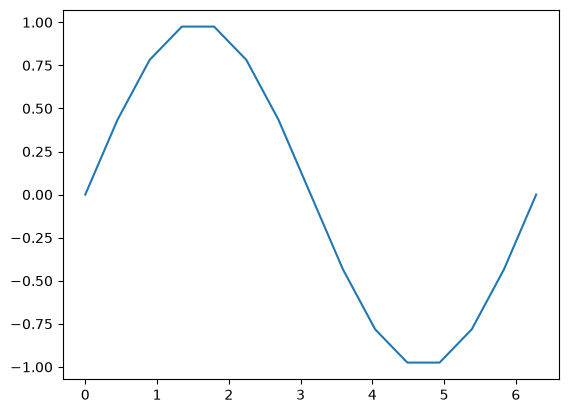
Per impostazione predefinita, i punti vengono collegati da una linea seguendo l’ordine con cui compaiono nei due array.
# Ascisse casuali e non ordinate da linspaace
rng = np.random.default_rng(seed=42)
x2 = rng.uniform(a, b, N)
print(x2)
y2 = np.sin(x2)
# Visualizzo
plt.plot(x2, y2)
plt.show()
[4.86290927 2.75755456 5.39472984 4.38169255 0.59173373 6.13001603
4.78238179 4.93898769 0.80496169 2.82985831 2.3297927 5.82303616
4.04552386 5.16956368 2.78605358]
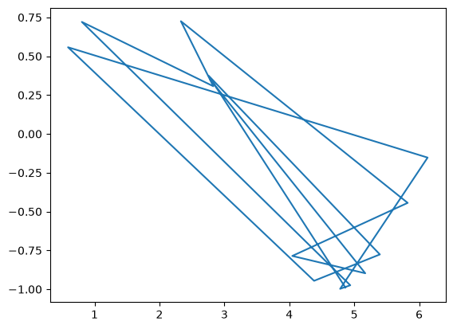
(1) Personalizzare il grafico#
1.1 Aggiunta di testo#
Vediamo ora come modificare l’aspetto del grafico aggiungendo un titolo, una griglia, le etichette degli assi e altri elementi che rendono il grafico più comprensibile e semplice da comprendere.
Le funzioni di personalizzazione più comuni sono:
plt.title(str): aggiunge un titolo al grafico;plt.xlabel(str): aggiunge un’etichetta all’asse orizzontale;plt.ylabel(str): aggiunge un’etichetta all’asse verticale;plt.grid(): aggiunge una griglia allo sfondo del grafico;
In Matplotlib, la maggior parte di queste istruzioni deve essere inserita fra il plt.plot(x, y) e lo plt.show().
import numpy as np
import matplotlib.pyplot as plt
# Creo i vettori
a = 0
b = 2*np.pi
N = 50
x = np.linspace(a, b, N)
y = np.sin(x)
# Visualize
plt.plot(x, y)
plt.title('A plot of f(x) = sin(x)')
plt.xlabel('x')
plt.ylabel('y = sin(x)')
plt.grid()
plt.show()
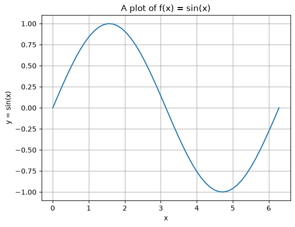
1.2 Opzioni grafiche#
Possiamo modificare l’area di visualizzazione del grafico, cambiando le proporzioni della figura e/o gli intervalli mostrati di default rispettivamente sull’asse orizzontale e su quello verticale.
plt.figure(figsize=(dim_x, dim_y)): imposta la larghezza e l’altezza della figura, espresse in pollici dadim_xedim_x;plt.xlim([x_init, x_end]): imposta il limite inferiore e quello superiore dell’asse orizzontale rispettivamente pari ax_initex_end;plt.ylim([y_init, y_end]): imposta il limite inferiore e quello superiore dell’asse verticale rispettivamente pari ay_initey_end.
plt.figure(figsize=(10, 5)) # da inserire subito per creare la figura
plt.plot(x, y)
plt.title('A plot of f(x) = sin(x)')
plt.xlabel('x')
plt.ylabel('y = sin(x)')
plt.grid()
plt.show()
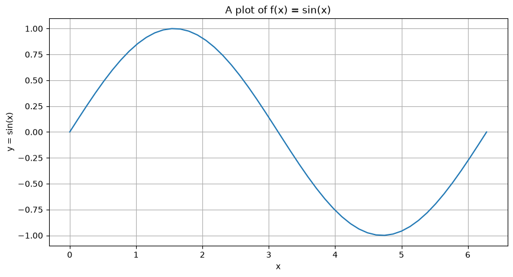
plt.plot(x, y)
plt.title('A plot of f(x) = sin(x)')
plt.xlabel('x')
plt.ylabel('y = sin(x)')
plt.xlim([-2, 10])
plt.grid()
plt.show()
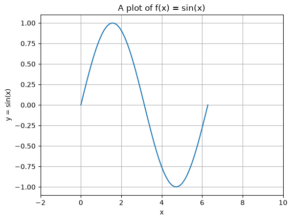
plt.plot(x, y)
plt.title('A plot of f(x) = sin(x)')
plt.xlabel('x')
plt.ylabel('y = sin(x)')
plt.ylim([-2, 2])
plt.grid()
plt.show()
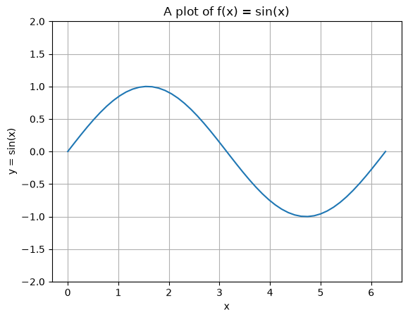
Possiamo modificare anche l’aspetto della linea, scegliendone il colore, lo spessore e lo stile. Queste opzioni devono essere specificate direttamente all’interno della funzione plt.plot().
Le opzioni principali sono:
color="nome_colore": imposta il colore della linea. Un elenco dei colori disponibili è consultabile nella documentazione di Matplotlib.linewidth=valore: imposta lo spessore della linea.
È inoltre possibile specificare in forma compatta lo stile della linea e degli indicatori, inserendo una stringa subito dopo gli array x e y:
"o": rappresenta i punti mediante indicatori circolari, senza collegarli;"--": collega i punti con una linea tratteggiata;":": collega i punti con una linea punteggiata;"o-": rappresenta i punti mediante indicatori circolari e li collega con una linea continua.
L’elenco completo degli stili e delle opzioni disponibili è riportato nella documentazione di plt.plot().
plt.figure(figsize=(15, 5))
plt.plot(x, y, "o-", color="red", linewidth=2)
plt.title('A plot of f(x) = sin(x)')
plt.xlabel('x')
plt.ylabel('y = sin(x)')
plt.grid()
plt.show()
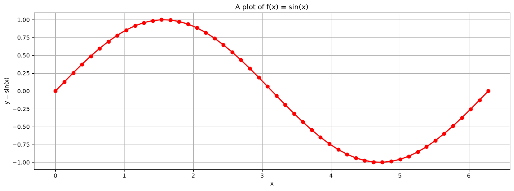
(2) Plot multipli#
È possibile rappresentare più curve all’interno dello stesso grafico. È sufficiente avere più array e aggiungere una (o più)nuova chiamata a plt.plot(x2, y2), tra il primo plt.plot(x, y) e il plt.show().
Per distinguere facilmente le curve, è bene visualizzare una legenda con plt.legend():
import numpy as np
import matplotlib.pyplot as plt
# Creo vettori
a = 0
b = 2*np.pi
N = 50
x = np.linspace(a, b, N)
y1 = np.sin(x)
y2 = np.cos(x)
# Visualizzo
plt.plot(x, y1)
plt.plot(x, y2)
plt.title('Funzioni trigonometriche')
plt.xlabel('x')
plt.ylabel('y')
plt.legend(['f(x) = sin(x)', 'f(x) = cos(x)'])
plt.grid()
plt.show()
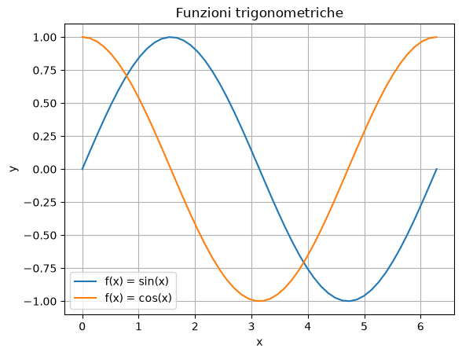
As you can see, in the bottom-left of the plot, we also printed out a legend. Following the code above, it is easy to understand that a legend can be simply introduced by listing the name of the lines, ordered with respect to the ordering of the plt.plot() functions. Matplotlib will visualize the correct color of the line accordingly.
# Esempio con più personalizzazione
# Visualizzo
plt.plot(x, y1, 'o', color='magenta')
plt.plot(x, y2, '--', color='k', linewidth=2)
plt.title('Funzioni trigonometriche')
plt.xlabel('x')
plt.ylabel('y')
plt.legend(['f(x) = sin(x)', 'f(x) = cos(x)'])
plt.xlim([-1, 7])
plt.grid()
plt.show()
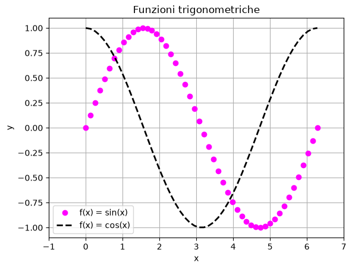
(3) Subplots#
Subplots are required to create a matrix of plots inside of the same figure, which can be very useful for various visualizations.
A subplot is created by first defining a figure. This can be done by the line plt.figure(figsize=(w, h)) where the figsize argument is required to change the proportion of the resulting plot. After that, it is possible to open a subplot with the command plt.subplot(nrow, ncol, idx), where nrow and ncol represents the number of images per rows and the number of images per columns in our matrix of plots, while idx is an incremental value, starting from 1, that indicate where the plot we are going to do should be placed inside of the matrix. idx=1 represents the upper-left corner and, while increasing, it moves the image from left to right and from up to down into the matrix.
Each time we want to open a different plot in our subplot, we have to specify the command plt.subplot(nrow, ncol, idx) again, with the same nrow and ncol argument, but different idx.
import numpy as np
import matplotlib.pyplot as plt
N = 30
a = 0
b= 10
x = np.linspace(a, b, N)
y1 = np.exp(x)
y2 = np.log(x)
y3 = np.abs(x)
# Visualizzo
plt.figure(figsize=(15, 5))
plt.subplot(1, 3, 1)
plt.plot(x, y1, '.-', color='green')
plt.title('f(x) = exp(x)')
plt.grid()
plt.subplot(1, 3, 2)
plt.plot(x, y2, 'o-', color='blue')
plt.title('f(x) = log(x)')
plt.grid()
plt.subplot(1, 3, 3)
plt.plot(x, y3, 'o-', color='cyan')
plt.title('f(x) = |x|')
plt.grid()
plt.show()
C:\Users\elena\AppData\Local\Temp\ipykernel_44336\2032523598.py:11: RuntimeWarning: divide by zero encountered in log
y2 = np.log(x)
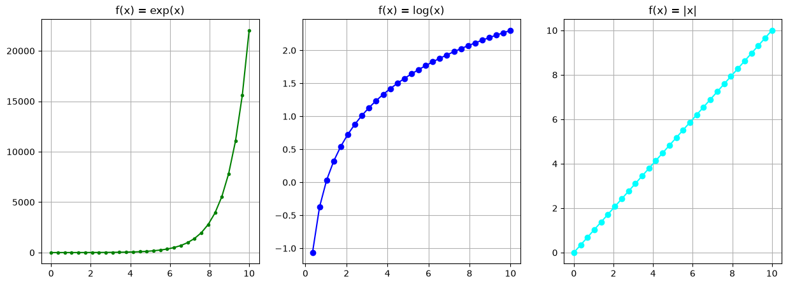
(4) Esportazione in png#
Una volta creato un grafico, lo si può salvare in formato png con plt.savefig("grafico.png"). Questa istruzione deve essere inserita dopo le personalizzazioni e, preferibilmente, prima di plt.show().
# Creo i vettori
x = np.linspace(0.01, 100, 50)
y = np.log(x)
# Creo il grafico
plt.plot(x, y, ".-", color="darkgreen")
# Esporto il png
plt.savefig("funzione_log.png", dpi=300, bbox_inches="tight") # tight elimina gli spazi bianchi superflui ed evita che titoli o etichette vengano tagliati.
# Mostro nel notebook
plt.show()
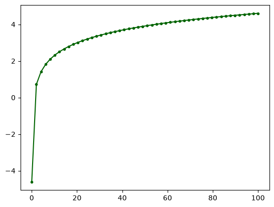
(5) Esercizi:#
Esercizio 1.#
Rappresenta la funzione \(y = 2x+1\) nell’intervallo \([-5, +5]\) utilizzando un numero opportuo di punti. Aggiungi al plot il titolo, le etichette degli assi e la griglia.
Esercizio 2.#
Crea un plot multiplo per confrontare fra loro le funzioni nel range \(x \in [-1.5, +1.5]\):
\(y=x\);
\(y=x^2\);
\(y=x^3\);
\(y=x^4\).
Assegna uno stile a ogni funzione e inserisci la leggenda.
Esercizio 3.#
Integra il grafico dell’esercizio 2 aggiungendo la curva di \(y=\sqrt{x}\).